library(dplyr)
library(data.table)
library(pander)
library(ggplot2)
source('../code/rlib_doc.R')
panderOptions('table.split.table', Inf)
theme_set(theme_bw(base_size=12))
source('https://gist.githubusercontent.com/liangyy/43912b3ecab5d10c89f9d4b2669871c9/raw/8151c6fe70e3d4ee43d9ce340ecc0eb65172e616/my_ggplot_theme.R')
th$panel.border = element_rect(colour = th$axis.line$colour)Here we are interested in surveying the performance of PRS and PTRS in four populations (African, British, Chinese, and Indian) in UK Biobank data. As most of the GWAS and transcritpome studies were done in Europeans, we are specifically interested in the out-of-sample performance of PRS/PTRS predictor obtained from European samples.
The analysis contained two stages: 1) training PRS/PTRS models; 2) test performance on held-out samples. For PRS, we built the LD-clumping based predictor (parameters: 250kb, R2 = 0.1). For PTRS, we learned the gene level effect size using S-PrediXcan with or without small variation. To implement the two-stage analysis pipeline, we split British individuals into three parts: 1) training set; 2) validation set; 3) test set. Training set was used to run GWAS followed by LD-clumping. Validation set was used to select the best-performing predictor (tuning hyperparameters). And test set was used to evaluate the predictor performance just as other populations.
After population assignment QC (removing individuals far from the mode of self-reported ancestry) and phenotype QC, the sample size of each population included in the analysis is shown below. As stated above, British population was further split into three parts with 5000 each for validation and testing along with the rest as training set.
pheno = fread('../output/query_phenotypes_cleaned_up.csv', header = T, sep = ',', data.table = F)
pheno %>% group_by(meaning) %>% summarize(nsample = n()) %>% pander(caption = 'Sample size by population in the analysis')| meaning | nsample |
|---|---|
| African | 2835 |
| British | 356476 |
| Chinese | 1326 |
| Indian | 4789 |
We surveyed the same set of 17 quantitative traits as Martin et al. (2019). For each trait, we made one data splitting on British individuals. For each splitting, we ran all 17 traits. So that we had 17 x 17 PRS and PTRS predictors, where each trait had 17 independent replications (but for the same data splitting, the results across traits were not independent due to correlation between traits). The list of traits are listed below.
d = read.table('../external_data/martin_et_al_2019ng_table_s6_trait_description.tsv', sep = '\t', header = T)
traits = tolower(d$short)
d %>% pander(caption = '17 quantitative traits included in the analysis')| short | long |
|---|---|
| BMI | body mass index |
| DBP | diastolic blood pressure |
| Hb | hemoglobin |
| Ht | Hematocrit |
| MCH | mean corpuscular hemoglobin |
| MCHC | mean corpuscular hemoglobin concentration |
| MCV | mean corpuscular volume |
| RBC | red blood cell count |
| SBP | systolic blood pressure |
| WBC | white blood cell count |
| Basophil | basophil count |
| Eosinophil | eosinophil count |
| Height | standing height |
| Lymphocyte | lymphocyte count |
| Monocyte | monocyte count |
| Neutrophil | neutrophil count |
| Platelet | platelet count |
Regarding the data sources of gene expression prediction models, we used GTEx v8 based models which are European based and MESA models which have African, Hispanic populations additionally. Specifically, we included GTEx v8 whole blood CTIMP models and mashr models and MESA models elastic net models which are from monocyte. The sample size of the models are listed below.
f2 = 'African American (AFA, n = 233), Hispanic (HIS, n = 352), and European (CAU, n = 578)'
f = do.call(rbind, sapply(strsplit(f2, '),')[[1]], function(x) {
x = strsplit(x, ' \\(')[[1]]
meta = strsplit(x[2], ', ')[[1]]
abbr = meta[1]
sample_size = stringr::str_remove(meta[2], 'n = ')
sample_size = as.numeric(stringr::str_remove(sample_size, '\\)'))
data.frame(population = stringr::str_remove(x[1], 'and '), abbreviation = abbr, sample_size = sample_size)
}, simplify = F))
rownames(f) = NULL
f = f %>% mutate(source = 'MESA', tissue = 'Monocyte')
f = rbind(f, data.frame(population = 'European', abbreviation = 'gtex_v8', sample_size = 573, source = 'GTEx_v8', tissue = 'Whole_Blood'))
f %>% pander('Sample size of gene expression prediction models in the analysis')| population | abbreviation | sample_size | source | tissue |
|---|---|---|---|---|
| African American | AFA | 233 | MESA | Monocyte |
| Hispanic | HIS | 352 | MESA | Monocyte |
| European | CAU | 578 | MESA | Monocyte |
| European | gtex_v8 | 573 | GTEx_v8 | Whole_Blood |
Note that the non-European models were only used to calculate the predicted expression. The S-PrediXcan runs to obtain gene-level effect size and p-values were based on European models only. To improve clarity, we refer the latter as the part of PTRS predictor but not the former.
Let \(\hat{y}\) be the predicted/estimated outcome and \(y\) be the observed one. We measure the predictive power of \(\hat{y}\) using partial \(R^2\). Specifically, we compute sum of squared error (SSE) for \(\hat{y}^{\text{null}}\) and \(\hat{y}^{\text{full}}\) where null model is least squared predictor of \(y\) using covariates only and full model is least squared predictor using both covariates and \(\hat{y}\). So that \[R^2 = 1 - \frac{SSE^{\text{full}}}{SSE^{\text{null}}}\].
To measure transferability, we use the best performing model within each population. Note that it is different from the previous setting where we used the model with p-value cutoff that is best performing model in European. The current setting is consistent with Martin et al. (2019). Transferability is defined as the ratio of \(R^2\)’s for the population of interest over the British-validation.
To make it clear, here we describe how we obtain gene weight and how we decide if a gene should be included in the PTRS model. The gene weights are obtained from S-PrediXcan runs using GWAS summary statistics from British-training and GTEx V8 EUR/MESA CAU models (PredictDB). To determine which genes to include, we implemented the following three strategies:
naive: P-value from the same S-PrediXcan runs.ldblock: Top gene within each European LD block (Berisa and Pickrell (2016) formatted by GTEx GWAS subgroup).mashr: For GTEx V8 data, we also trained MASHR models, so we used P-value from the S-PrediXcan runs using MASHR models in the same tissue.First of all, we are interested in PVE of predicted expression. It gives us a sense on how much variation could be captured by a linear predictor. In the case of genotype being predictor, PVE is heritability.
Here we calculate PVE using GCTA approach with first 20 PCs and some age and sex variables (age^2, age * sex, etc) as covariates. And the analysis was done one population at a time. For British, we used 5000 individuals (one of the test set). Here we compare the PVE results in all populations with predicted expression calculated from different models.
pops = c('African', 'British-test-1', 'Chinese', 'Indian')
models = c('AFHI', 'CAU', 'ctimp_Whole_Blood')
df_pve = list()
for(p in pops) {
for(m in models) {
filename = paste0('~/Desktop/tmp/gcta_regu/reml_from_hail_martin_et_al_traits_x_', m, '_x_', p, '.tsv')
df_pve[[length(df_pve) + 1]] = read.table(filename, header = T, sep = '\t') %>% mutate(model = m, population = p)
}
}
df_pve = do.call(rbind, df_pve)
df_pve %>% select(model, num_predictors) %>% filter(!duplicated(model)) %>% pander(caption = 'The rough number of predictors (genes) for each model')| model | num_predictors |
|---|---|
| AFHI | 5554 |
| CAU | 4670 |
| ctimp_Whole_Blood | 7041 |
df_pve$h_sq[is.na(df_pve$h_sq)] = 0
df_pve$h_sq_se[is.na(df_pve$h_sq_se)] = 0Models could differ by tissue, population, predictor, and etc. To simplify the comparison, we focus on three models: GTEx v8 whole blood CTIMP model, MESA AFA + HIS EN model, and MESA CAU EN model. These models has similar sample size.
for(p in pops) {
tmp = df_pve %>% filter(population == p) %>% reshape2::dcast(trait ~ model, value.var = 'h_sq')
pp = myggpairs(tmp %>% select(AFHI, CAU, ctimp_Whole_Blood), tmp$trait) +
th +
theme(legend.title = element_blank()) +
geom_abline(slope = 1, intercept = 0)
print(pp + ggtitle(p))
}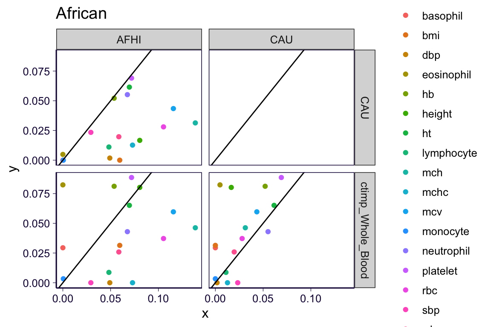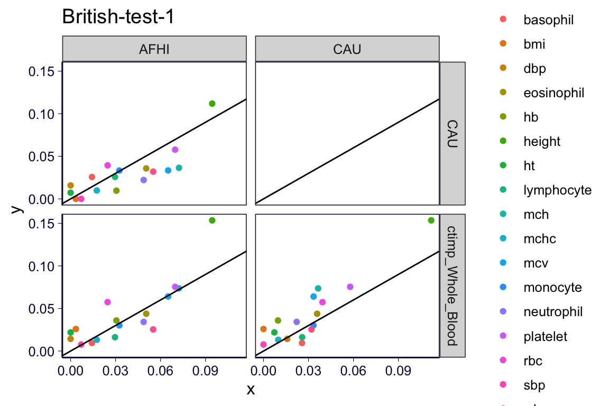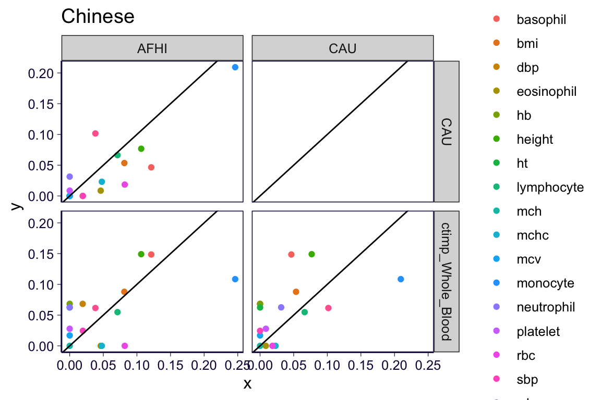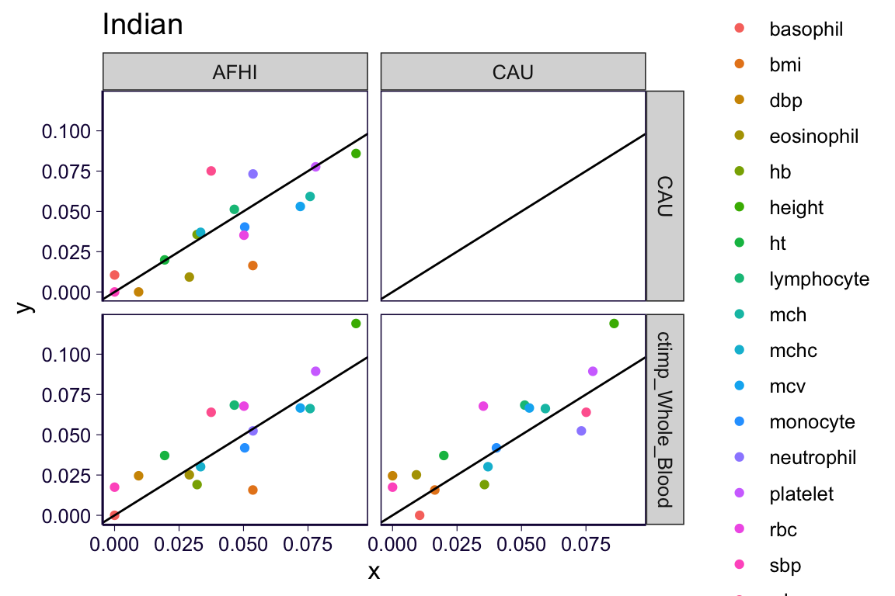
Take-away:
df_pve %>% ggplot() + geom_bar(aes(x = trait, y = h_sq, fill = population), stat = 'identity', position = position_dodge(0.5), width = 0.5) + facet_wrap(~model, ncol = 1) + theme(axis.text.x = element_text(angle = 45, hjust = 1, vjust = 1)) + th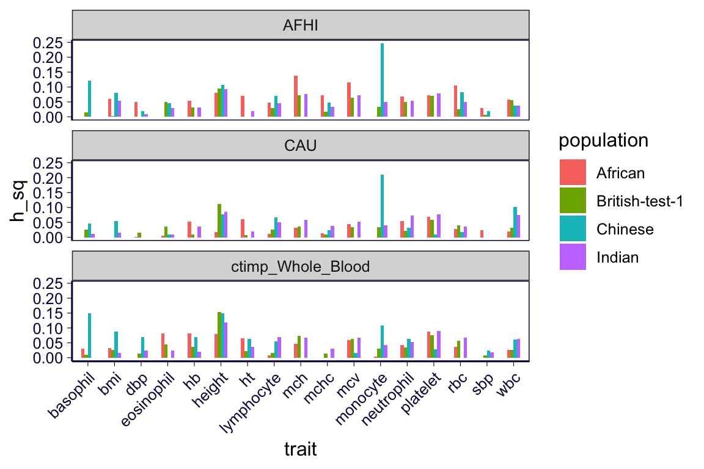
Take-away:
Heritability estimates were from Neale’s lab using LDSC regression (on the basis of Europeans in UK Biobank).
df_h2 = readRDS('../analysis_output/hsq_neale_lab.rds')
df_pve_tmp = inner_join(df_pve, df_h2 %>% select(h2_observed, h2_observed_se, trait), by = 'trait')
df_pve_tmp %>% ggplot() +
geom_abline(slope = 0.2, intercept = 0, color = 'red') +
geom_point(aes(x = h2_observed, y = h_sq), alpha = .5, size = 0.1) +
geom_errorbar(aes(x = h2_observed, ymin = h_sq - 1.96 * h_sq_se, ymax = h_sq + 1.96 * h_sq_se), alpha = .5) +
geom_errorbarh(aes(xmin = h2_observed - 1.96 * h2_observed_se, xmax = h2_observed + 1.96 * h2_observed_se, y = h_sq), alpha = .5) +
facet_grid(model~population) +
th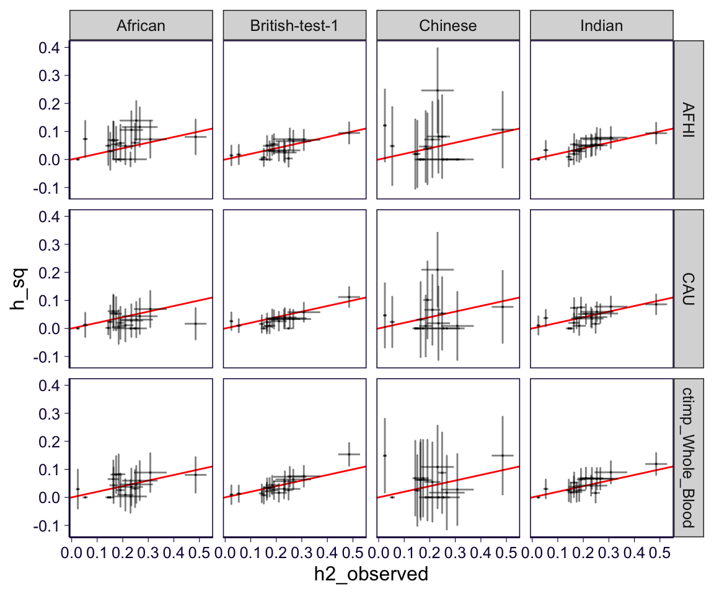
Take-away:
collector = list()
for(i in 1 : 3) {
filename1 = paste0('~/Desktop/tmp/prs_r2/ptrs_r2_subset', i, '.txt') # I used the wrong name ptrs* for some runs ... but the runs themselves are correct
filename2 = paste0('~/Desktop/tmp/prs_r2/prs_r2_subset', i, '.txt')
if(file.exists(filename1)) {
tmp = read.table(filename1, header = T, sep = '\t')
} else if(file.exists(filename2)) {
tmp = read.table(filename2, header = T, sep = '\t')
}
collector[[length(collector) + 1]] = tmp %>% mutate(subset = i)
}
for(i in 4 : 17) {
for(t in traits) {
filename1 = paste0('~/Desktop/tmp/prs_r2/ptrs_r2_subset', i, '_x_', t, '.txt') # I used the wrong name ptrs* for some runs ... but the runs themselves are correct
filename2 = paste0('~/Desktop/tmp/prs_r2/prs_r2_subset', i, '_x_', t, '.txt')
if(file.exists(filename1)) {
tmp = read.table(filename1, header = T, sep = '\t')
} else if(file.exists(filename2)) {
tmp = read.table(filename2, header = T, sep = '\t')
}
collector[[length(collector) + 1]] = tmp %>% mutate(subset = i)
}
}
df_result_prs = do.call(rbind, collector)
df_result_prs$population = parse_pop(df_result_prs$population)
df_result_prs$pval_cutoff = factor(df_result_prs$pval_cutoff, levels = sort(unique(df_result_prs$pval_cutoff)))for(pop in unique(df_result_prs$population)) {
p = df_result_prs %>% filter(population == pop) %>% ggplot() + geom_boxplot(aes(x = pval_cutoff, y = r2)) + facet_wrap(~trait, ncol = 4, scales = 'free_y') + theme(axis.text.x = element_text(angle = 90, hjust = 1, vjust = 0.5)) + ggtitle(pop) + th #
print(p)
}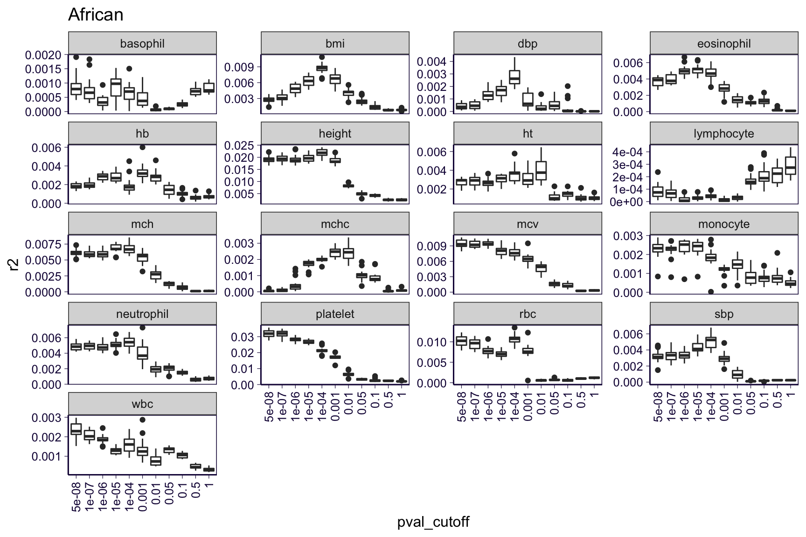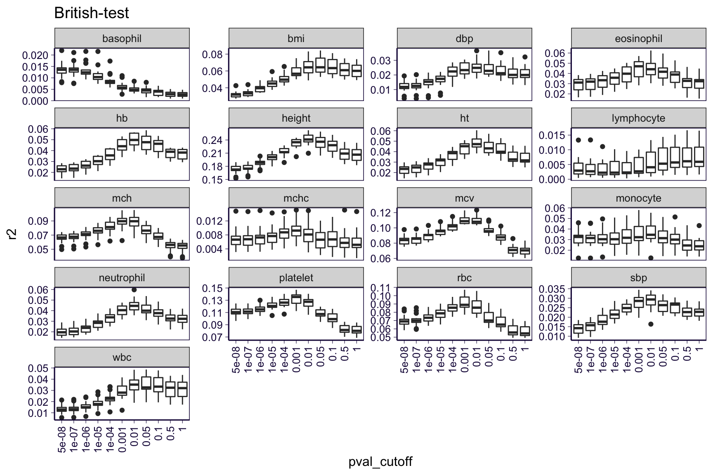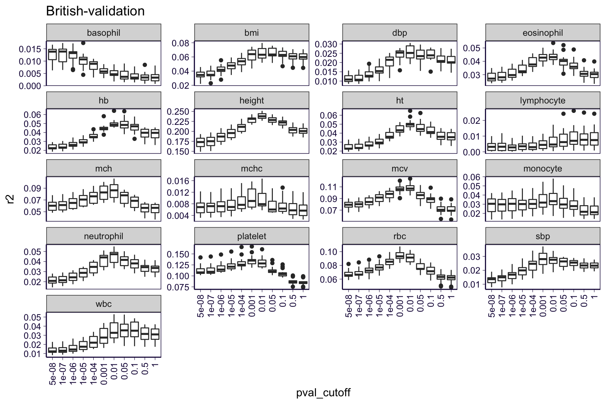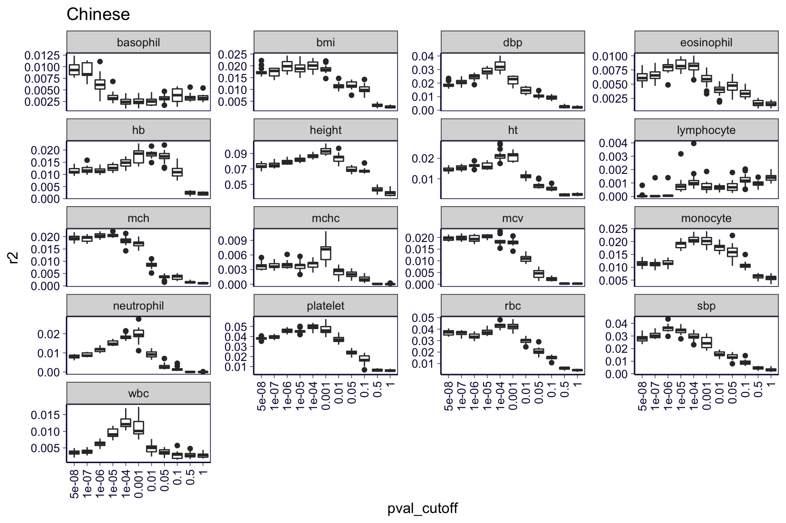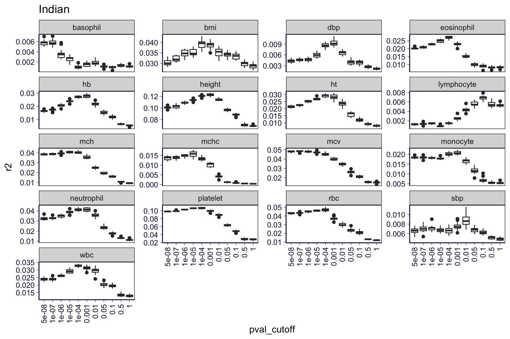
Take-away:
df_median_prs = df_result_prs %>% group_by(population, trait, pval_cutoff) %>% summarize(median_r2 = median(r2)) %>% ungroup()
df_median_prs %>% ggplot() +
geom_point(aes(x = pval_cutoff, y = median_r2, color = population), alpha = 0.5, size = 5) +
geom_line(aes(x = pval_cutoff, y = median_r2, group = population, color = population)) +
facet_wrap(~trait, ncol = 3, scales = 'free_y') +
th +
theme(legend.position = 'bottom', axis.text.x = element_text(angle = 90, hjust = 1, vjust = 0.5)) 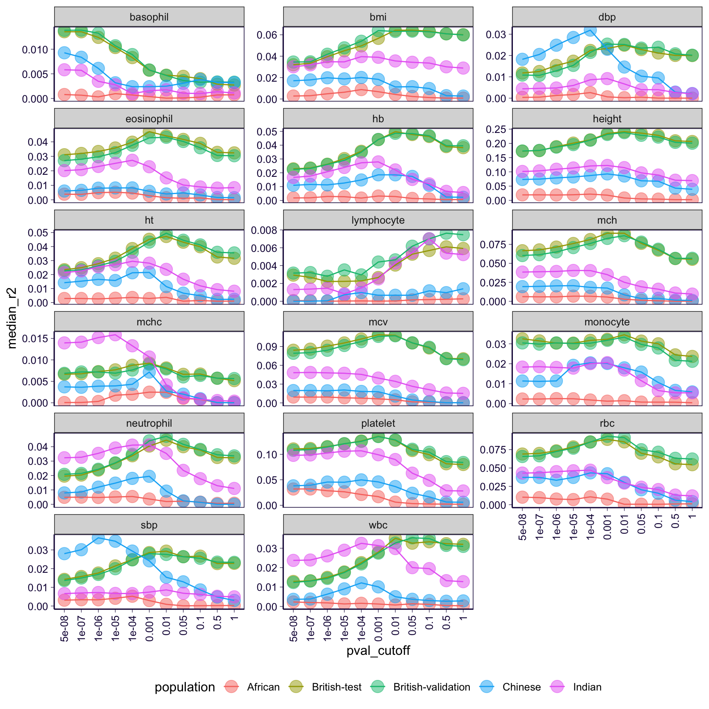
Take-away:
df_best_prs = df_median_prs %>% group_by(population, trait) %>% summarize(best_r2 = max(median_r2)) %>% ungroup()
df_best_prs = left_join(df_best_prs, df_best_prs %>% filter(population == 'British-validation'), by = 'trait', suffix = c('', '_reference'))
df_best_prs = df_best_prs %>% mutate(transferability = best_r2 / best_r2_reference)
df_best_prs %>% filter(population != 'British-validation') %>% ggplot() + geom_hline(yintercept = 1, linetype = 2) + geom_violin(aes(x = population, y = transferability)) + geom_boxplot(aes(x = population, y = transferability), width = 0.05) + th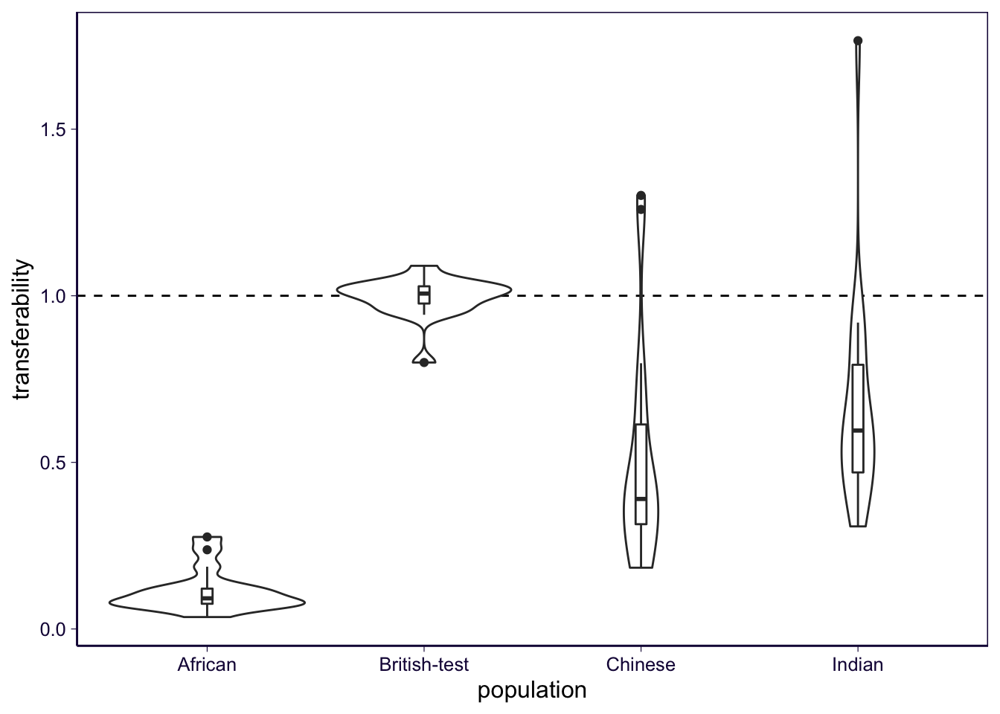
Take-away:
Here, we load the results of
gtex = data.frame(
source = c('GTEx V8 Whole Blood'),
population_spredixcan = c('EUR'),
population_prediction_model = c('EUR'),
selection_of_gene = c('naive', 'ldblock', 'mashr')
)
mesa = data.frame(
source = c('MESA monocyte'),
population_spredixcan = c('CAU'),
population_prediction_model = c('CAU', 'AFHI')
)
overview_ptrs = rbind(
gtex,
mesa %>% mutate(selection_of_gene = 'naive'),
mesa %>% mutate(selection_of_gene = 'ldblock')
)
overview_ptrs %>% pander(caption = 'PTRS models being shown in this report')| source | population_spredixcan | population_prediction_model | selection_of_gene |
|---|---|---|---|
| GTEx V8 Whole Blood | EUR | EUR | naive |
| GTEx V8 Whole Blood | EUR | EUR | ldblock |
| GTEx V8 Whole Blood | EUR | EUR | mashr |
| MESA monocyte | CAU | CAU | naive |
| MESA monocyte | CAU | AFHI | naive |
| MESA monocyte | CAU | CAU | ldblock |
| MESA monocyte | CAU | AFHI | ldblock |
type_folders = list(naive = 'ptrs_r2', ldblock = 'ptrs_ldblock_r2', mashr = 'ptrs_mashr_r2')
result = list()
# naive
for(i in 1 : 17) {
for(t in traits) {
for(type in names(type_folders)) {
filename = paste0('~/Desktop/tmp/', type_folders[[type]], '/ptrs-r2_subset', i, '_x_', t, '.txt')
tmp = read.table(filename, header = T, sep = '\t')
if('SSE.with' %in% colnames(tmp)) {
tmp = tmp %>% select(-SSE.wo, -SSE.with)
}
result[[length(result) + 1]] = tmp %>% mutate(subset = i, trait = t, model = 'GTExV8', type = type)
}
}
}
df_gtex = do.call(rbind, result)
df_gtex$population = parse_pop(df_gtex$population)
df_gtex$ptrs_col = stringr::str_remove(df_gtex$ptrs_col, 'pval_')
df_gtex$ptrs_col = factor(df_gtex$ptrs_col, levels = unique(df_gtex$ptrs_col))mesa_models = c('AFHI', 'CAU')
type_folders = list(naive = 'ptrs_mesa_r2', ldblock = 'ptrs_mesa_ldblock_r2')
result = list()
for(m in mesa_models) {
for(i in 1 : 17) {
for(t in traits) {
for(type in names(type_folders)) {
filename = paste0('~/Desktop/tmp/', type_folders[[type]], '/', type_folders[[type]], '_', m, '/ptrs-r2_subset', i, '_x_', t, '.txt')
tmp = read.table(filename, header = T, sep = '\t')
result[[length(result) + 1]] = tmp %>% mutate(subset = i, trait = t, model = m, type = type)
}
}
}
}
df_mesa = do.call(rbind, result)
df_mesa = df_mesa %>% select(-SSE.wo, -SSE.with)
df_mesa$population = parse_pop(df_mesa$population)
df_mesa$ptrs_col = stringr::str_remove(df_mesa$ptrs_col, 'pval_')
df_mesa$ptrs_col = factor(df_mesa$ptrs_col, levels = unique(df_mesa$ptrs_col))df_ptrs = rbind(df_gtex, df_mesa)From the brief examination of \(R^2\) among replications, the variation is a little bigger than PRS (results not shown). But still British-validation and British-test are quite consistent. For the subsequent analysis, we use the median \(R^2\) for each (population, trait, cutoff, model, type) combination so that it is consistent with PRS. And similarly, we take the best performing model within each population (for each model and PTRS type).
df_median_ptrs = df_ptrs %>% group_by(population, trait, ptrs_col, model, type) %>% summarize(median_r2 = median(r2)) %>% ungroup()
df_best_ptrs = df_median_ptrs %>% group_by(population, trait, model, type) %>% summarize(best_r2 = max(median_r2)) %>% ungroup()df_best_ptrs %>% filter(type != 'mashr') %>%
reshape2::dcast(population + trait + model ~ type, value.var = 'best_r2') %>%
ggplot() +
geom_abline(slope = 1, intercept = 0) +
geom_point(aes(x = naive, y = ldblock)) + facet_grid(population ~ model) +
th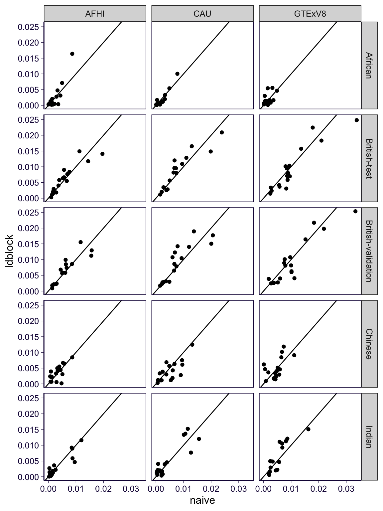
Take-away:
df_best_ptrs %>% filter(model == 'GTExV8', type != 'ldblock') %>%
reshape2::dcast(population + trait + model ~ type, value.var = 'best_r2') %>%
ggplot() +
geom_abline(slope = 1, intercept = 0) +
geom_point(aes(x = naive, y = mashr)) + facet_wrap(~population, scales = 'free') +
th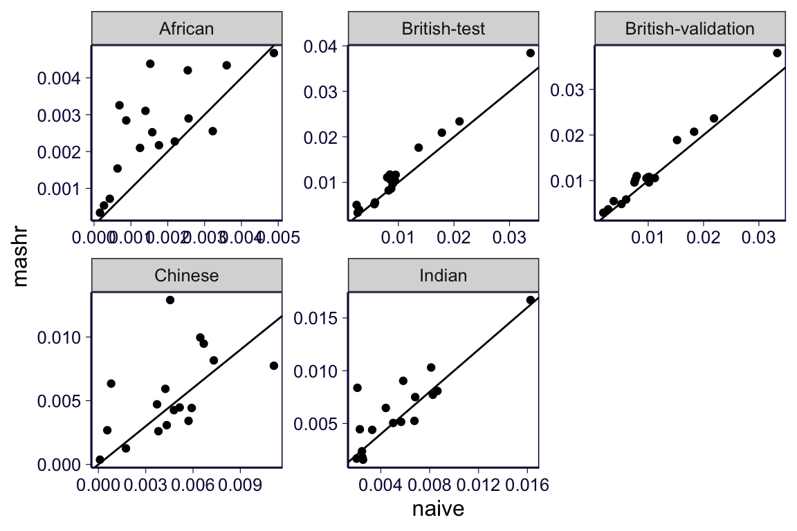
Take-away:
Another important thing to examine is whether the population-matched prediction model could improve the predicitive power. To do so, we look at MESA results (PTRS-naive and PTRS-ldblock) and compare CAU to AFHI.
df_best_ptrs %>% filter(model != 'GTExV8') %>%
reshape2::dcast(population + trait + type ~ model, value.var = 'best_r2') %>%
ggplot() +
geom_abline(slope = 1, intercept = 0) +
geom_point(aes(x = CAU, y = AFHI)) + facet_grid(type~population, scales = 'free') +
th +
theme(axis.text.x = element_text(angle = 90, hjust = 1, vjust = 0.5))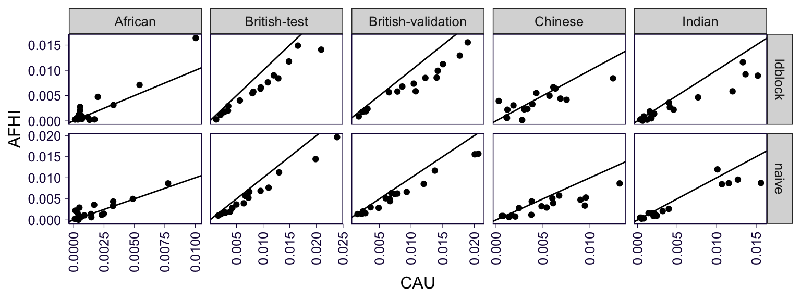
Take-away:
For MESA results, we take the best performing model across all prediction models.
df_median_ptrs$source = 'GTExV8'
df_median_ptrs$source[df_median_ptrs$model != 'GTExV8'] = 'MESA'
df_best_ptrs_trans = df_median_ptrs %>% group_by(population, trait, source, type) %>% summarize(best_r2 = max(median_r2)) %>% ungroup()
df_best_ptrs_trans = left_join(df_best_ptrs_trans, df_best_ptrs_trans %>% filter(population == 'British-validation'), by = c('trait', 'source', 'type'), suffix = c('', '_reference'))
df_best_ptrs_trans = df_best_ptrs_trans %>% mutate(transferability = best_r2 / best_r2_reference)
df_best_ptrs_trans %>% filter(population != 'British-validation') %>% ggplot() + geom_hline(yintercept = 1, linetype = 2) + geom_violin(aes(x = population, y = transferability, color = type), position = position_dodge(width = 0.6)) + geom_boxplot(aes(x = population, y = transferability, fill = type), width = 0.05, position = position_dodge(width = 0.6)) + facet_wrap(~source, ncol = 1) + th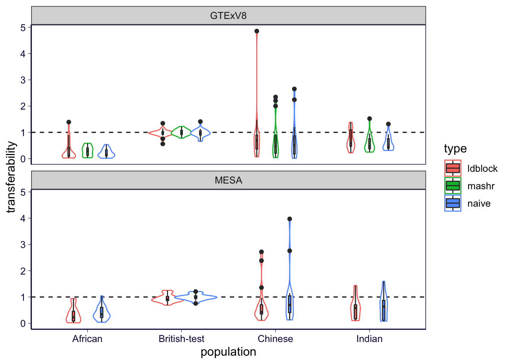
Take-away:
naive, ldblock, and mashr approach perform similar to each other.df_best_ptrs_trans2 = df_median_ptrs %>% group_by(population, trait, source) %>% summarize(best_r2 = max(median_r2)) %>% ungroup()
df_best_ptrs_trans2 = left_join(df_best_ptrs_trans2, df_best_ptrs_trans2 %>% filter(population == 'British-validation'), by = c('trait', 'source'), suffix = c('', '_reference'))
df_best_ptrs_trans2 = df_best_ptrs_trans2 %>% mutate(transferability = best_r2 / best_r2_reference)
df_best_ptrs_combine = rbind(
df_best_ptrs_trans %>% select(population, trait, transferability, best_r2, source, type),
df_best_ptrs_trans2 %>% select(population, trait, transferability, best_r2, source) %>% mutate(type = 'collapse')
)
df_best_ptrs_combine %>% filter(population != 'British-validation') %>% ggplot() + geom_hline(yintercept = 1, linetype = 2) + geom_violin(aes(x = population, y = transferability, color = type), position = position_dodge(width = 0.6)) + geom_boxplot(aes(x = population, y = transferability, fill = type), width = 0.05, position = position_dodge(width = 0.6)) + facet_wrap(~source, ncol = 1) + th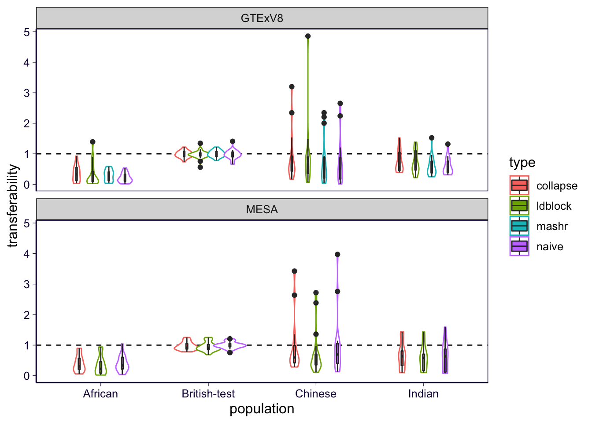
Take-away:
prs = df_best_prs %>% select(population, trait, transferability, best_r2) %>% mutate(type = 'PRS')
ptrs = rbind(
df_best_ptrs_combine %>% filter(type == 'collapse') %>% mutate(type = paste0('PTRS-', source, '-', type)) %>% select(-source),
df_best_ptrs_trans %>% filter(type == 'naive') %>% mutate(type = paste0('PTRS-', source, '-', type)) %>% select(population, trait, transferability, best_r2, type)
)
rbind(
prs,
ptrs
) %>% filter(population != 'British-validation') %>%
ggplot() + geom_hline(yintercept = 1, linetype = 2) + geom_violin(aes(x = population, y = transferability, color = type), position = position_dodge(width = 0.6), width = 1) + geom_boxplot(aes(x = population, y = transferability, fill = type), width = 0.05, position = position_dodge(width = 0.6)) + th + theme(legend.position = 'bottom')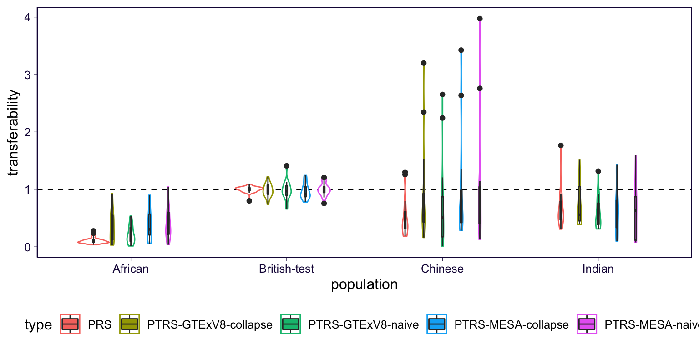
left_join(ptrs, prs %>% select(-type), by = c('trait', 'population'), suffix = c('_ptrs', '_prs')) %>% filter(population != 'British-validation') %>%
ggplot() + geom_abline(slope = 1, intercept = 0) +
geom_point(aes(x = transferability_prs, transferability_ptrs)) + facet_grid(type ~ population, scales = 'free') + th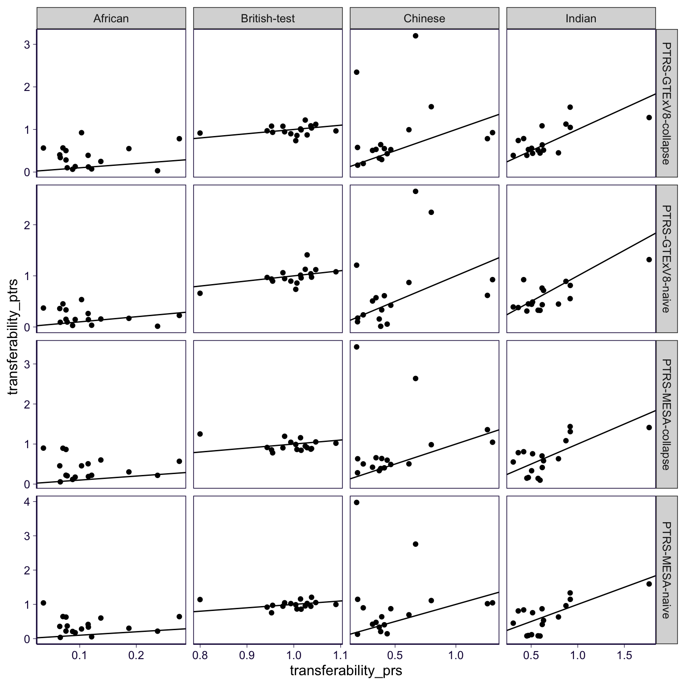
Take-away:
inner_join(df_h2, prs, by = 'trait') %>%
ggplot() +
geom_point(aes(x = h2_observed, y = best_r2)) + facet_wrap(~population) + th +
ggtitle('PTRS R2 vs. heritability')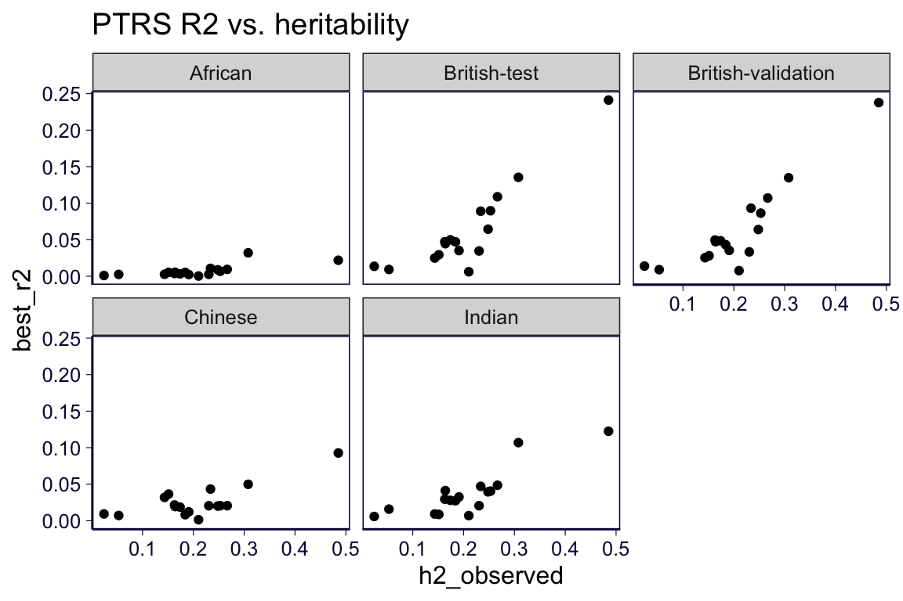
df_pve = df_pve %>% mutate(population = parse_pop(population))
df_pve$type = 'GTExV8'
df_pve$type[df_pve$model != 'ctimp_Whole_Blood'] = 'MESA'
df_pve_collapse = df_pve %>% group_by(trait, population, type) %>% summarize(pve = max(h_sq)) %>% ungroup()
df_pve_collapse = rbind(
df_pve_collapse,
df_pve %>% filter(model == 'AFHI') %>% mutate(type = paste0('MESA-', model)) %>% select(trait, population, type, h_sq) %>% rename(pve = h_sq),
df_pve %>% filter(model == 'CAU') %>% mutate(type = paste0('MESA-', model)) %>% select(trait, population, type, h_sq) %>% rename(pve = h_sq)
)
ptrs_collapse = ptrs %>% filter(type %in% c('PTRS-GTExV8-collapse', 'PTRS-MESA-collapse'))
ptrs_collapse$type_clean = 'GTExV8'
ptrs_collapse$type_clean[ptrs_collapse$type == 'PTRS-MESA-collapse'] = 'MESA'
ptrs_mesa = df_median_ptrs %>% filter(source == 'MESA') %>% group_by(population, trait, model) %>% summarize(best_r2 = max(median_r2)) %>% ungroup() %>% mutate(type = paste0('MESA-', model)) %>% select(-model) %>% mutate(type_clean = type)
ptrs_collapse = rbind(
ptrs_collapse %>% select(-transferability),
ptrs_mesa
)
inner_join(
df_pve_collapse,
ptrs_collapse,
by = c('type' = 'type_clean', 'trait', 'population')
) %>% ggplot() + geom_point(aes(x = pve, y = best_r2)) + facet_wrap(~population) + th + facet_grid(type ~ population) +
ggtitle('PTRS R2 vs. PVE \n MESA model takes the max between AFHI and CAU')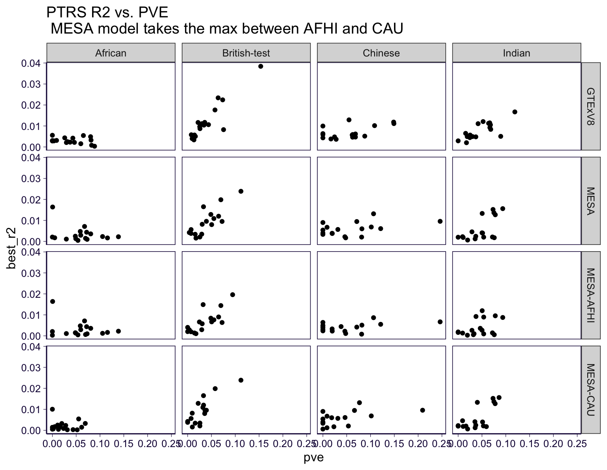
Take-away:
Berisa, Tomaz, and Joseph K Pickrell. 2016. “Approximately Independent Linkage Disequilibrium Blocks in Human Populations.” Bioinformatics 32 (2). Oxford University Press: 283.
Martin, Alicia R, Masahiro Kanai, Yoichiro Kamatani, Yukinori Okada, Benjamin M Neale, and Mark J Daly. 2019. “Clinical Use of Current Polygenic Risk Scores May Exacerbate Health Disparities.” Nature Genetics 51 (4). Nature Publishing Group: 584.